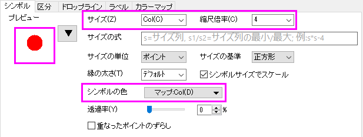

何がグラフテンプレートと一緒に保存されるのか?
Graph-Template-Elements
グラフウィンドウはグラフテンプレートファイルから作成されます。 Originのグラフテンプレートファイルの拡張子はOTPです。 Originは多数のグラフテンプレート（システムテンプレート）を内蔵しています。 これらのテンプレートはOriginの100種類以上のグラフタイプを作成するために使用され、カスタム設定に変更して保存できます。
グラフテンプレートファイルは、テンプレートにデータを保存しないという点でグラフウィンドウファイル（.OGG）と異なります。 そうではなく、グラフテンプレートファイルは重要なページとレイヤの特性（ページサイズ、レイヤ数、テキストと描画オブジェクトの拡大縮小など）を保存し、データの印刷スタイル情報（印刷タイプ、印刷色、データラベルなど）も保存します。 詳細は、『グラフテンプレートに保存される属性』をご覧下さい。
グラフに施した編集をテンプレートファイルに保存する
アクティブなグラフウィンドウをグラフテンプレート（.OTP）ファイルとして保存するには
- グラフウィンドウをアクティブにして、「ファイル：テンプレートの新規保存」を選びます。
または、
- ウィンドウのタイトルバーを右クリックして、ショートカットメニューからテンプレートの新規保存を選びます。
どちらの方法でも、「template_saveas」ダイアログボックスが開きます。ダイアログボックスでの編集方法についての詳細は、テンプレートとしてカスタムウィンドウを保存を参照してください。
グラフテンプレートに保存される属性
グラフページ、ページ上の各グラフレイヤ、軸、目盛ラベル、軸ラベル、テキストまたはオブジェクトの注釈、およびデータプロットはすべて、グラフテンプレートに保存できるプロパティを持っています。
作図の詳細ダイアログボックスで制御した属性は、グラフテンプレートとともに保存されます。
- 作図の詳細ダイアログボックスのページタブ
- 作図の詳細ダイアログボックスのレイヤタブ
- 作図の詳細ダイアログボックスのデータプロットタブ
- 作図の詳細ダイアログボックスの関数、データ点、エラー、ラベルのタブ
以下のダイアログボックスで制御される属性は、グラフテンプレートに保存されます。
- 軸ダイアログボックス。
- グラフの注釈（テキストおよび描画オブジェクト）を制御するダイアログボックス。
また、以下のグラフウィンドウのプロパティもテンプレートに保存されます。
- グラフのロングネーム。このテンプレートで作成するグラフのロングネームを事前定義できます。
- グラフのショートネーム。このテンプレートで作成するグラフのショートネームを事前定義できます。
Note:グラフロングネーム/ショートネームの事前定義は、テーマから設定します。フォーマットをテーマとして保存ダイアログには、以下の設定項目があります。
- page.Misc.PagePresetLongName.strValで、ロングネームを事前定義
- page.Misc.PagePresetShortName.strValで、ショートネームを事前定義
|
最後に...
- グラフテンプレートを保存するときにそれを「クローンテンプレート」としてマークした場合は、グラフウィンドウプロットの関係とソースデータの構造に関する情報がグラフテンプレートとともに保存されます。詳細については、クローンテンプレート をご参照ください。
- テンプレート保存時のグラフのプレビュー画像は、グラフテンプレートとともに保存されます。このプレビューは、作図メニューとテンプレートライブラリでテンプレートの表示に使用されます。
データプロットのスタイルホルダについての注意
グラフウィンドウの各データプロットの詳細（またはデータプロットスタイル）は、データプロットスタイルホルダーに保存されます。 データプロットスタイルホルダには、データプロットの種類(例：散布図、折れ線、縦棒など)についての情報およびデータプロットの設定(例：「作図の詳細」ダイアログボックスの『シンボル』タブ上の設定など)ついての情報が含まれます。 グラフウィンドウをテンプレートとして保存すると、グラフウィンドウの各レイヤのデータプロットには、データプロットスタイルホルダーが関連付けられます。
したがって、このカスタムテンプレートに基づいてグラフを作成すると、グラフ内の各レイヤについて、そのレイヤの最初のデータプロットスタイルホルダーに格納されている情報に従って、そのレイヤの最初のデータプロットが表示されます。 レイヤ内の2番目のデータプロットは、そのレイヤの2番目のデータプロットスタイルホルダに格納されている情報に従って表示されます。 データプロットをレイヤに追加すると、Originは現在使用されていないデータプロットスタイルホルダを検索し（レイヤの内容からデータプロットを削除した場合など）、最初のデータプロットスタイルを使用してデータプロットを表示します。 保存されたスタイルホルダー数よりも多くのデータプロットをレイヤに追加した場合、最後のデータプロットスタイルホルダーの情報を使用してデータプロットを表示します。
テンプレートとともに保存される追加のスクリプト
特定のコマンドを使用して、グラフテンプレートとともにLabTalkスクリプトを保存できます。Origin 2021bから、2つのコマンドがサポートされます。
- コマンドpage.info.system.plotting.LT$=を使用

|
- プロジェクトを新規作成し、<Program Folder>\Samples\Graphing\Group.DATを新しいブックにインポートします。
- 最初の2列を選択し、作図：基本の2Dグラフ： 散布図を選択してグラフを作成します。
- プロットをダブルクリックして作図の詳細ダイアログを開き、シンボル形状を塗りつぶし円を選択し、サイズをcol(C)にし、縮尺倍率を4に設定して、シンボルカラーマッピングとしてcol(D)を割り当てます。

- シンボルサイズのマッピングとシンボルカラーのマッピングをテンプレートに保存するには、まず以下のスクリプトを実行する必要があります。
page.info.system.plotting.LT$="worksheet -p 248 __TEMPLATE;"
ここで、worksheet -p 248 __TEMPLATE;は列マッピング情報をテンプレートとともに保存するLabTalkコマンドです。 __TEMPLATE は、保存する現在のウィンドウを示すためのキーです（名前を付けていないため）。
- ウィンドウタイトルを右クリックし、テンプレートの新規保存 を選択してダイアログを開き、「myBnC」といった名前を入力して、OKをクリックします。
- 元のワークブックをアクティブにし、作図：ユーザテンプレートに作図: myBnCを選択すると、同じグラフを作成できます。
|
- コマンドpage.info.system.plotting.LTAfter$を使用
たとえば、プロット後に境界幅= 8で「ページをレイヤサイズに合わせる」場合は、次のコマンドを実行します。
page.info.system.plotting.LTAfter$="pfit2l borderwid:=8;」